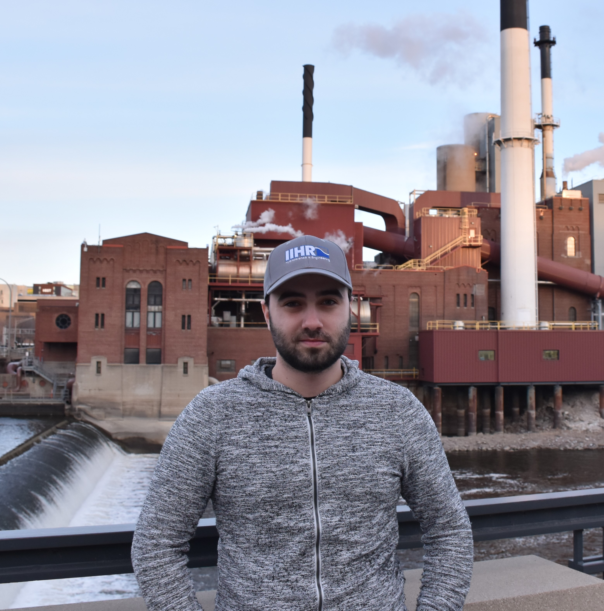

I am a Ph.D. student in the Department of Civil and Environmental Engineering, specializing in the Water Resources program. I also work as a Graduate Research Assistant at IIHR—Hydroscience & Engineering. My research interests include flood risk, hydroinformatics, geospatial analysis, and infrastructure resilience. My work focuses on translating hydrologic and flood hazards into infrastructure-relevant impact metrics for bridges, transportation systems, wind energy infrastructure, electrical substations, and urban flood vulnerability. I use GIS, remote sensing, WebGIS, decision-support methods, and data-driven analysis to evaluate exposure, vulnerability, accessibility, and system-level consequences under flood scenarios. Overall, my goal is to develop accessible and reproducible research tools that connect physical hazard processes with infrastructure performance and practical decision-making.
My academic background includes civil engineering training at Middle East Technical University and graduate research experience at the University of Iowa, where I have worked on flood-impact analysis, bridge vulnerability assessment, spatial risk modeling, and interactive web-based visualization platforms. I am especially interested in combining engineering analysis with geovisualization so that complex spatial data can be communicated clearly to researchers, planners, and decision-makers.